4L80-E/4L85-E - Automatic Transmission
Valve Body and Pressure Switch Replacement
Tools Required
^ J 25025-5 Dial Indicator Mounting Post - M6 X 1.00
^ J 36850 Transjel(R) Lubricant
Removal Procedure
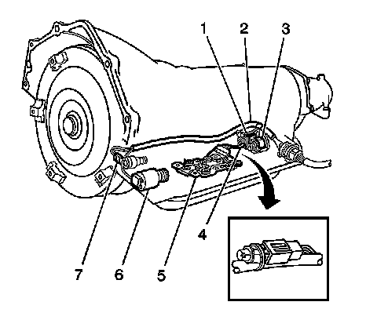
1. Ensure that removal of the valve body is necessary before proceeding.
Important: The following components can be serviced without removing the valve body:
^ The 2-3 solenoid (1)
^ The internal wiring harness (2)
^ The 1-2 shift solenoid (3)
^ The transmission fluid temperature sensor (4)
^ The transmission fluid pressure manual valve position switch (5)
^ The pressure control solenoid (6)
^ The torque converter clutch pulse width modulation (TCC PWM) solenoid (7)
2. Remove the fluid level indicator.
3. Remove the transmission filter.
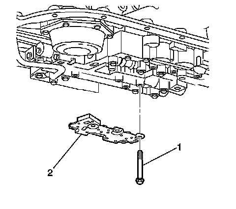
4. Disconnect the internal wire harness from the transmission fluid pressure (TFP) manual valve position switch.
Important: Use care not to loose the 5 O-rings that are located between the TFP manual valve position switch and the valve body.
5. Remove the valve body bolts (1) that retain the (TFP) manual valve position switch (2).
6. Remove the TFP manual valve position switch.
7. Disconnect the internal wiring harness electrical connectors from the remaining valve body electrical components.
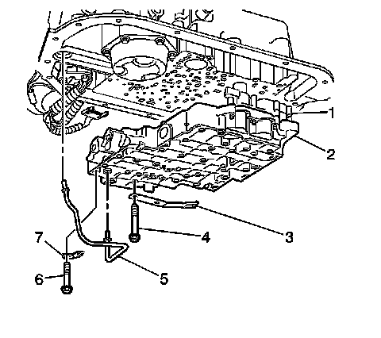
8. Remove the lube oil pipe bolt (6) and retainer (7).
9. Remove the lube oil pipe (5).
10. Remove the manual shaft detent spring bolt and spring (3).
Important: Keep the control valve body level when lowering it from the vehicle. This will prevent the loss of checkballs located in the valve body passages.
11. Remove the remaining valve body bolts.
12. Carefully lower the valve body from the transmission. Use care not to drop the manual shaft valve.
13. Remove the valve body (2) which includes the following:
^ The accumulator housing (1)
^ The valve body to the spacer plate gasket
^ The spacer plate
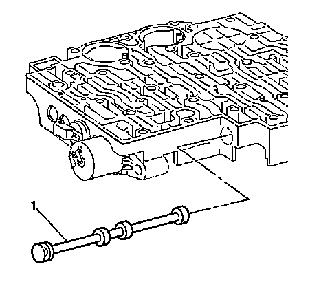
14. Remove the manual valve (1) from the valve body.
15. Inspect the manual valve for nicks and burrs.
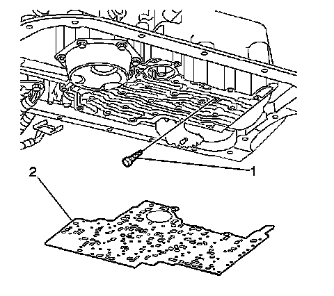
16. Remove the spacer plate to case gasket (2) from the case. The gasket may stick to the spacer plate.
17. Remove the PWM screen (1) from the case passage.
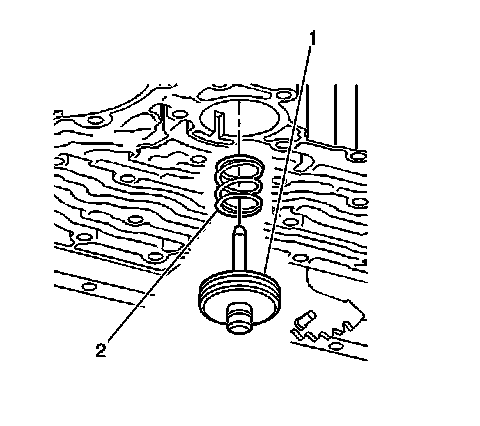
18. Remove the manual 2-1 band servo (1).
19. Remove the servo piston cushion spring (2).
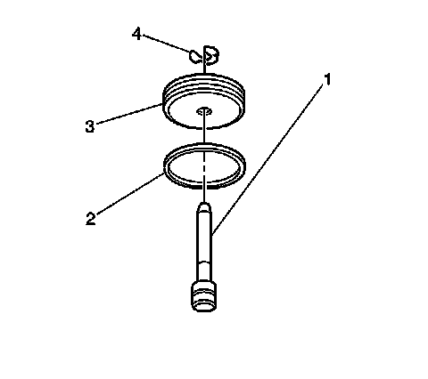
20. Remove the manual 2-1 band servo piston pin retainer ring (4).
21. Remove the manual 2-1 band servo piston pin (1).
22. Remove the manual 2-1 band servo piston seal (2).
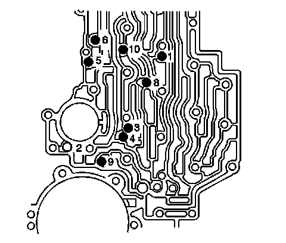
Important: Do not use a magnet in order to remove the checkballs. Using a magnet to remove the checkballs may magnetize the checkballs, causing metal particles to stick.
23. Remove the 8 checkballs (9 for some models).
Installation Procedure
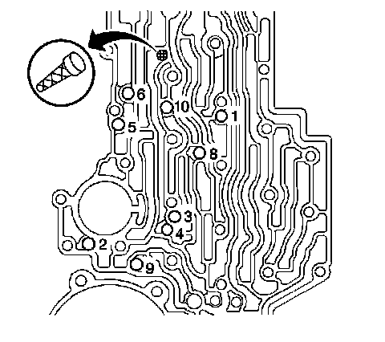
1. Install the 8 checkballs (9 for some models) into the transmission case passages.
^ The checkball marked as number 2, is used on RCP, RDP, ZJP and ZLP models only
^ To hold the checkballs in place, use the J 36850.
2. Install the PWM screen into the valve body.
3. Install a new manual 2-1 band servo piston seal (2) onto the manual 2-1 band servo piston (3).
4. Install the manual 2-1 band servo piston pin (1) into the manual 2-1 band servo piston (3).
5. Install the manual 2-1 band servo piston pin retainer ring (4).
6. Install the manual 2-1 band servo piston cushion spring (2).
Important: Make certain that the tapered end of the manual 2-1 band servo piston pin contacts the manual 2-1 band.
7. Install the manual 2-1 band servo piston (1).
8. Install the manual valve (1) into the valve body.
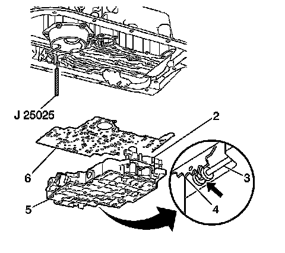
9. To aid in alignment and assembly, install J 25025-5.
10. Install the valve body gasket (6).
11. Install the valve body (5). Attach the manual valve to the detent lever while installing the valve body.
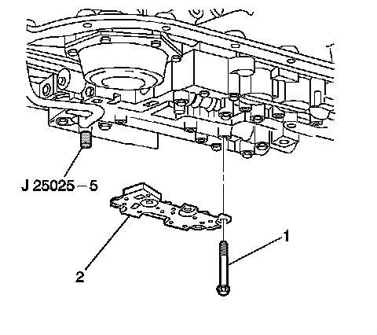
12. Install the transmission fluid pressure manual valve position switch (2).
Notice: Refer to Fastener Notice.
13. Install the transmission fluid pressure manual valve position switch bolts (1) finger tight.
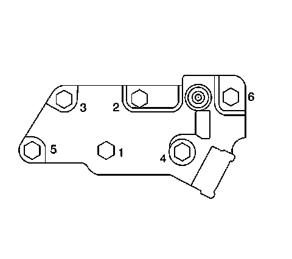
14. Tighten the bolts in the order shown.
Tighten the bolts to 11 N.m (97 lb in).
15. Remove J 25025-5.
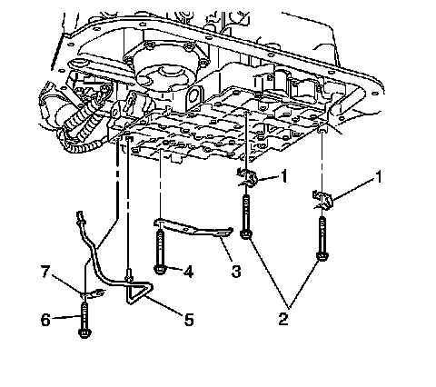
16. Install the manual shaft detent roller and spring (3) and bolts.
17. Install the 2 wiring harness clips (1) and bolts (2).
18. Install the wiring harness clip (1) and bolts (2).
19. Install the lube oil pipe (5) with the short end into the valve body.
20. Install the lube oil pipe retainer (7) and the bolt (6).
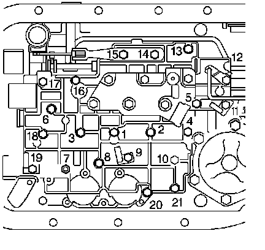
21. Install the valve body bolts and tighten in the order shown.
Tighten the bolts to 11 N.m (97 lb in).
22. Install the remaining valve body bolts.
Tighten the bolts to 11 N.m (97 lb in).
23. Connect the internal wiring harness to the valve body electrical components.
24. Install the transmission filter.
Important: It is recommended that transmission adaptive pressure (TAP) information be reset.
Resetting the TAP values using a scan tool will erase all learned values in all cells. As a result, the engine control module (ECM), powertrain control module (PCM), or transmission control module (TCM) will need to relearn TAP values. Transmission performance may be affected as new TAP values are learned.
25. Reset the TAP values. Refer to Transmission Adaptive Functions.